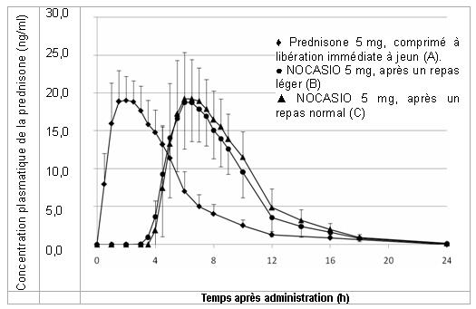

RÉSUMÉ DES CARACTÉRISTIQUES DU PRODUIT
ANSM - Mis à jour le : 22/05/2009
NOCASIO 2 mg, comprimé à libération modifiée
2. COMPOSITION QUALITATIVE ET QUANTITATIVE
Prednisone .......................................................................................................................................... 2 mg
Pour un comprimé à libération modifiée
Excipient: 39,7 mg de lactose
Pour la liste complète des excipients, voir rubrique 6.1.
Comprimé à libération modifiée.
Comprimé cylindrique, blanc jaunâtre, avec « NP 2 » gravé sur un côté.
4.1. Indications thérapeutiques
NOCASIO est indiqué dans le traitement de la polyarthrite rhumatoïde active modérée à sévère chez l'adulte, notamment en présence de raideur matinale.
4.2. Posologie et mode d'administration
Voie orale.
La dose appropriée dépend de la gravité de la pathologie et de la réponse individuelle du patient. En règle générale, on recommande une dose d'attaque de 10 mg de prednisone. Dans certains cas, une dose d'attaque plus forte peut être nécessaire (15 ou 20 mg de prednisone, par exemple). En fonction des symptômes cliniques et de la réponse du patient, la dose d'attaque peut rapidement être réduite à une dose d'entretien plus faible.
Lors du remplacement du traitement standard (avec prise du glucocorticoïde le matin) par NOCASIO, administré à l'heure du coucher (soit aux environs de 22 heures), la même dose (en mg d'équivalent prednisone) doit être maintenue. Après le relais, la dose peut être ajustée en fonction de la situation clinique.
Pour les doses non réalisables/praticables avec ce dosage, ce médicament existe avec d'autres dosages. Pour le traitement prolongé de la polyarthrite rhumatoïde, une dose individuelle pouvant atteindre 10 mg de prednisone par jour doit être ajustée en fonction de la sévérité et de l'évolution de l'affection.
Selon l'effet du traitement, la dose peut être réduite par paliers de 1 mg toutes les 2 à 4 semaines jusqu'à l'obtention de la dose d'entretien appropriée.
Pour interrompre le traitement par NOCASIO, la dose doit être réduite par paliers de 1 mg toutes les 2 à 4 semaines, en surveillant les paramètres de l'axe hypophyso-surrénalien le cas échéant.
Mode d'administration
NOCASIO doit être pris à l'heure du coucher (aux environs de 22 heures) pendant ou après le dîner; il doit être avalé en entier avec une quantité suffisante de liquide. Si plus de 2 ou 3 heures se sont écoulées depuis le dîner, il est recommandé de prendre NOCASIO avec un repas léger ou un en-cas (une tranche de pain avec du jambon ou du fromage, par exemple). NOCASIO ne doit pas être administré à jeun. Cela pourrait diminuer sa biodisponibilité.
NOCASIO est conçu pour libérer la substance active de façon retardée, soit 4 à 6 heures après la prise. La libération de la substance active et les effets pharmacologiques commenceront durant la nuit.
NOCASIO comprimés à libération modifiée consiste en un noyau contenant la prednisone et un revêtement inerte. La libération retardée de la prednisone implique l'intégrité du revêtement. Pour cette raison, les comprimés à libération modifiée ne doivent pas être cassés, divisés ou mâchés.
Compte tenu de l'insuffisance des données concernant la sécurité et l'efficacité, l'utilisation de ce médicament n'est pas recommandée chez les enfants et les adolescents.
Chez les patients hypothyroïdiens ou souffrant de cirrhose hépatique, des doses comparativement faibles peuvent être suffisantes ou une réduction posologique peut être nécessaire.
NOCASIO est contre-indiqué en cas d'hypersensibilité à la prednisone ou à l'un des excipients (voir rubrique 6.1).
4.4. Mises en garde spéciales et précautions d'emploi
Un traitement pharmacologique à base de prednisone ne doit être administrée qu'en cas de nécessité.
Il doit s'accompagner d'une thérapie anti-infectieuse appropriée en présence des pathologies suivantes:
· Infections virales aiguës (zona, herpès, varicelle, kératite herpétique).
· Hépatite chronique active positive pour l'antigène de surface de l'hépatite B (HBsAg).
· Environ 8 semaines avant et 2 semaines après une immunisation par des vaccins vivants.
· Mycoses et parasitoses systémiques (nématodes, par exemple).
· Poliomyélite.
· Lymphadénite après inoculation du BCG.
· Infections bactériennes aigues ou chroniques.
· Antécédent de tuberculose (attention à la réactivation) Du fait de leurs propriétés immunosuppressives, les glucocorticoïdes peuvent entraîner des infections ou les aggraver. Ces patients doivent être suivis de près (effectuer par exemple un test tuberculinique). Les patients présentant un risque particulier doivent recevoir un traitement prophylactique antituberculeux.
En présence des pathologies suivantes, un traitement par prednisone peut nécessiter une thérapie associée:
· Ulcères gastro-intestinaux.
· Ostéoporose ou ostéomalacie sévère.
· Hypertension difficile à normaliser.
· Diabète sucré sévère.
· Troubles psychiatriques (ou antécédent de troubles psychiatriques).
· Glaucome à angle fermé ou ouvert.
· Ulcères cornéens et lésions cornéennes.
En raison du risque de perforation intestinale, la prednisone ne doit être utilisée que si elle est absolument nécessaire et avec une surveillance adéquate en cas de:
· Rectocolite hémorragique sévère avec perforation imminente.
· Diverticulite.
· Anastomoses intestinales (en postopératoire immédiat).
Si NOCASIO est administré dans des conditions de jeûne, il est possible que les concentrations efficaces de prednisone dans le sang ne soient pas atteintes. Par conséquent, NOCASIO doit être pris pendant ou après le dîner afin d'assurer une efficacité suffisante. Cependant, malgré ces recommandations, il a été observé des concentrations plasmatiques faibles de NOCASIO chez 6 à 7 % des patients. Ceci devra être pris en compte si NOCASIO n'est pas suffisamment efficace. Dans ces situations, il est possible d'envisager un passage vers une forme à libération immédiate.
NOCASIO ne doit pas être remplacé par des comprimés de prednisone à libération immédiate en conservant le même schéma d'administration en raison du mécanisme de libération retardée.
En cas de substitution, d'arrêt ou d'interruption d'un traitement prolongé, les risques suivants doivent être pris en considération: phénomène de rebond de la polyarthrite rhumatoïde, insuffisance surrénalienne aiguë (notamment dans les situations de stress, comme par exemple au cours des infections, après un accident, avec une contrainte physique accrue), syndrome de sevrage cortisonique.
Du fait de ses propriétés pharmacologiques, NOCASIO ne doit pas être utilisé dans les indications aiguës à la place des comprimés de prednisone à libération immédiate.
Sous NOCASIO, il peut être nécessaire d'augmenter la dose d'insuline ou d'antidiabétique oral. Les patients avec un diabète sucré devront par conséquent être traités sous surveillance étroite.
Pendant le traitement par NOCASIO, il est nécessaire de contrôler régulièrement la tension artérielle chez les patients dont l'hypertension est difficile à normaliser.
Les patients souffrant d'une insuffisance cardiaque grave doivent être surveillés étroitement en raison du risque d'aggravation de leur pathologie.
Des troubles du sommeil sont documentés comme étant plus fréquemment observés sous NOCASIO qu'avec les formulations conventionnelles à libération immédiate qui sont administrées le matin. Si une insomnie se produit et ne s'améliore pas, un passage vers une formulation conventionnelle à libération immédiate peut être envisagé.
Le traitement par NOCASIO peut aussi masquer les signes et symptômes d'une infection existante ou en évolution et peut ainsi rendre les efforts diagnostiques plus difficiles.
L'utilisation prolongée de NOCASIO, même à doses faibles, entraîne un risque accru d'infection. Ces infections éventuelles peuvent également être dues à des micro-organismes rarement à l'origine d'infections dans des circonstances normales (infections opportunistes).
Certaines viroses (varicelle, rougeole) peuvent prendre une forme plus grave chez les patients traités par les glucocorticoïdes. Les personnes immunodéprimées n'ayant jamais eu la varicelle ou la rougeole sont particulièrement exposées. Si, pendant le traitement par NOCASIO, ces personnes ont un contact avec des individus ayant la varicelle ou la rougeole, un traitement préventif doit être instauré, le cas échéant.
Les vaccinations à l'aide de vaccins inactivés sont habituellement possibles. Cependant, la réponse immunitaire et par conséquent le succès de la vaccination peuvent être diminués avec de fortes doses de glucocorticoïdes.
En cas de traitement prolongé par NOCASIO, des bilans médicaux réguliers (y compris un examen ophtalmologique tous les trois mois) sont indiqués. En cas de doses relativement fortes, s'assurer d'une supplémentation suffisante en potassium et du respect de la restriction sodée et surveiller la kaliémie.
Si pendant le traitement par NOCASIO, certains événements (accidents, intervention chirurgicale, etc.) provoquent un stress physique élevé, il peut être nécessaire d'augmenter la dose transitoirement.
En fonction de la durée du traitement et de la posologie utilisée, on peut s'attendre à un impact négatif sur le métabolisme du calcium. Il est donc recommandé de prendre des mesures prophylactiques contre l'ostéoporose, surtout en présence d'autres facteurs de risque (tels que prédisposition familiale, âge avancé, femme ménopausée, apports protéiques et calciques insuffisants, tabagisme excessif, consommation exagérée d'alcool ainsi que le manque d'activité physique). La prophylaxie repose sur un apport suffisant en calcium et en vitamine D ainsi que sur l'activité physique. En cas d'ostéoporose préexistante, un traitement complémentaire doit être envisagé.
Ce médicament contient du lactose monohydraté. Les patients ayant des problèmes héréditaires rares d'intolérance au galactose, un déficit en Lapp lactase ou un syndrome de malabsorption du glucose/galactose ne doivent pas prendre ce médicament.
Au cours de l'utilisation de fortes doses de prednisone sur une période prolongée (30 mg/jour pendant au moins 4 semaines), on a observé des troubles réversibles de la spermatogenèse, ayant persisté plusieurs mois après l'arrêt du médicament.
4.5. Interactions avec d'autres médicaments et autres formes d'interactions
Associations à prendre en compte
+ Hétérosides cardiotoniques:
Potentialisation possible de l'effet des hétérosides suite à une carence potassique.
+ Natriurétiques/laxatifs
Augmentation de l'excrétion du potassium.
+ Antidiabétiques
Diminution de l'effet hypoglycémiant.
+ Coumariniques:
Diminution ou augmentation de l'efficacité des anticoagulants coumariniques.
+ Antiphlogistiques non stéroïdiens/antirhumatismaux, salicylés et indométhacine
Augmentation du risque d'hémorragies gastro-intestinales.
+ Myorelaxants non dépolarisants
Prolongation possible de la relaxation musculaire.
+ Atropine et autres anticholinergiques
L'utilisation concomitante de NOCASIO peut exacerber une pression intraoculaire déjà élevée.
+ Praziquantel:
Les glucocorticoïdes peuvent abaisser les concentrations sanguines du praziquantel.
+ Chloroquine, hydroxychloroquine, méfloquine:
Risque accru de survenue de myopathies ou cardiomyopathies.
+ Somatropine:
Réduction possible de l'efficacité de la somatropine.
+ Estrogènes (contraceptifs oraux, par exemple):
Augmentation possible de l'efficacité des glucocorticoïdes.
+ Réglisse:
Inhibition possible du métabolisme des glucocorticoïdes.
+ Rifampicine, phénytoïne, barbituriques, bupropion et primidone:
Diminution de l'efficacité des glucocorticoïdes.
+ Ciclosporine:
Augmentation des taux sanguins de la ciclosporine. Risque accru de crises comitiales.
+ Amphotéricine B:
Le risque d'hypokaliémie peut être accru.
+ Cyclophosphamide:
Augmentation possible des effets du cyclophosphamide.
+ IECA:
Risque accru d'anomalies de la numération sanguine.
+ Antiacides à base d'aluminium et de magnésium:
Diminution de l'absorption des glucocorticoïdes. Cependant, du fait du mécanisme d'action retardé de NOCASIO, une interaction entre la prednisone et les antiacides à base d'aluminium/magnésium est peu probable.
+ Influence sur les méthodes de diagnostic:
Suppression possible des réactions cutanées provoquées par les tests d'allergie. L'augmentation de TSH consécutive à l'administration de protiréline peut être réduite.
NOCASIO ne doit être utilisé chez la femme enceinte que si les bénéfices l'emportent sur les risques éventuels. Il convient d'utiliser la plus faible dose efficace de NOCASIO nécessaire pour maintenir un contrôle adéquat de la maladie.
Les études chez l'animal indiquent que l'administration de doses pharmacologiques de glucocorticoïdes pendant la grossesse peut augmenter le risque de retard de croissance intra-utérine, de maladie cardiovasculaire et/ou métabolique à l'âge adulte et peut avoir un effet sur la densité des récepteurs des glucocorticoïdes et sur le renouvellement des neurotransmetteurs ou le développement neuro-comportemental.
La prednisone a provoqué la formation de fentes palatines lors d'expérimentations animales (voir rubrique 5.3). L'existence d'un risque possible accru de survenue de fentes buccales chez le fœtus humain, consécutif à l'administration de glucocorticoïdes au cours du premier trimestre, fait l'objet de discussions.
Si les glucocorticoïdes sont administrés plutôt en fin de grossesse, il existe un risque d'atrophie du cortex surrénalien du fœtus, pouvant nécessiter un traitement substitutif chez le nouveau-né. Ce traitement devra ensuite être diminué lentement.
Les glucocorticoïdes sont excrétés en petites quantités dans le lait maternel (jusqu'à 0,23 % d'une dose donnée). Pour les doses allant jusqu'à 10 mg/jour, la quantité ingérée par l'intermédiaire du lait maternel se situe au dessous du seuil de détection. Aucun effet délétère pour les nourrissons n'a été rapporté à ce jour. Néanmoins, les glucocorticoïdes ne doivent être prescrits que si les bénéfices pour la mère l'emportent sur les risques pour l'enfant.
Le rapport des concentrations dans le lait sur celles dans le plasma augmente avec les doses supérieures à 10 mg/jour (par exemple, on retrouve 25 % de la concentration sérique dans le lait maternel avec 80 mg de prednisone/jour). Il est donc recommandé d'interrompre l'allaitement dans ces cas.
4.7. Effets sur l'aptitude à conduire des véhicules et à utiliser des machines
Les effets sur l'aptitude à conduire des véhicules et à utiliser des machines n'ont pas été étudiés.
La fréquence et la gravité des effets indésirables énumérés ci-après dépendent de la posologie et de la durée du traitement.
Dans la plage de doses recommandée pour NOCASIO (corticothérapie à faible dose avec des posologies journalières comprises entre 1 et 10 mg), les effets indésirables énumérés surviennent moins fréquemment et sont moins graves qu'avec des doses supérieures à 10 mg.
Les effets indésirables suivants peuvent se produire en fonction de la durée du traitement et de la posologie.
|
Système organique |
Très fréquent ≥ 1/10 |
Fréquent ≥ 1/100, < 1/10 |
Peu fréquent ≥ 1/1000, < 1/100 |
Rare ≥ 1/10000, <1/1000 |
Très rare < 1/10000 |
Fréquence indéterminée (ne peut être estimée sur la base des données disponibles) |
|
Affections hématologiques et du système lymphatique |
|
leucocytose modérée, lymphopénie, éosinopénie, polycythémie |
|
|
|
|
|
Affections du système immunitaire |
|
diminution des défenses immunitaires, masquage des infections, aggravation des infections latentes |
|
réactions allergiques |
|
|
|
Affections endocriniennes |
|
suppression surrénalienne et syndrome de Cushing iatrogène (symptômes typiques: visage lunaire, obésité abdominale et pléthore) |
|
troubles de la sécrétion des hormones sexuelles (aménorrhée, impuissance), troubles thyroïdiens |
|
|
|
Troubles du métabolisme et de la nutrition |
|
rétention sodée avec œdème, excrétion accrue de potassium (attention aux arythmies), augmentation de l'appétit et prise de poids, diminution de la tolérance au glucose, diabète sucré, hypercholestérolémie et hypertriglycéridémie |
|
|
|
|
|
Affections psychyatriques |
|
insomnie |
|
dépression, irritabilité, euphorie, augmentation des impulsions, psychose. |
|
|
|
Affections du système nerveux |
|
céphalées |
|
hypertension intracrânienne bénigne, manifestation d'une épilepsie latente et prédisposition accrue à la survenue de crises comitiales en cas d'épilepsie avérée |
|
|
|
Affections oculaires |
|
cataracte, notamment avec opacité sous -capsulaire postérieure, glaucome |
|
aggravation des symptômes associés à un ulcère cornéen, favorise les inflammations oculaires d'origine virale, fongique ou bactérienne |
|
|
|
Affections vasculaires |
|
|
hypertension, risque accru d'artériosclérose et de thrombose, vasculite (également comme syndrome de sevrage après un traitement prolongé) |
|
|
|
|
Affections gastro-intestinales: |
|
|
(pas d'AINS concomitant): ulcérations gastro-intestinales, hémorragies gastro-intestinales |
pancréatite |
|
|
|
Affections de la peau et du tissu sous -cutané |
|
vergetures, atrophie, télangiectasies, augmentation de la fragilité capillaire, pétéchies, ecchymoses |
hypertrichose, acné cortico- induite, retard de cicatrisation des plaies, dermatite de type rosacée (péri-buccale), altérations de la pigmentation cutanée |
réactions d'hypersensibilité, comme un exanthème médicamenteux |
|
|
|
Affections musculo-squelettiques et du tissu conjonctif |
|
atrophie et faiblesse musculaires, ostéoporose (dose-dépendante, peut survenir même lors d'un traitement de courte durée) |
|
ostéonécrose aseptique (au niveau de l'humérus et de la tête du fémur). |
|
|
Aucune intoxication aiguë connue avec NOCASIO. En cas de surdosage, on devrait observer une augmentation des effets indésirables, notamment les effets endocriniens, métaboliques et électrolytiques (voir rubrique 4.8).
Il n'existe pas d'antidote connu pour la prednisone.
5. PROPRIETES PHARMACOLOGIQUES
5.1. Propriétés pharmacodynamiques
Classe pharmacothérapeutique:Glucocorticoïdes
Code ATC:H02AB07
La prednisone est un glucocorticoïde non fluoré par voie générale.
La prednisone exerce un effet dose-dépendant sur le métabolisme de quasiment tous les tissus. Dans les conditions physiologiques, ces effets sont vitaux pour maintenir l'homéostasie de l'organisme au repos et dans des conditions de stress, ainsi que pour réguler les activités du système immunitaire.
Aux doses de NOCASIO habituellement prescrites, la prednisone possède un effet anti-inflammatoire immédiat (anti-exsudatif et anti-prolifératif) et un effet immunosuppresseur retardé. Elle inhibe la chimiotaxie et l'activité des cellules immunitaires ainsi que la libération et l'action des médiateurs de l'inflammation et des réactions immunitaires, tels que les enzymes lysosomiales, les prostaglandines et les leucotriènes.
Le traitement prolongé par de fortes doses entraîne une diminution de la réponse du système immunitaire et du cortex surrénalien. L'effet minéralotrope, marqué avec l'hydrocortisone, reste décelable avec la prednisone et peut nécessiter une surveillance des concentrations sériques des électrolytes.
Chez les patients souffrant de polyarthrite rhumatoïde, les cytokines pro-inflammatoires, comme les interleukines IL-1 et IL-6 ainsi que le facteur de nécrose tumorale alpha (TNF-α) atteignent des pics plasmatiques tôt le matin (entre 7 et 8 h pour l'IL-6, par exemple). Il a été montré que les concentrations en cytokines diminuent après l'administration de NOCASIO et la libération nocturne de prednisone qui s'ensuit (avec un début d'absorption à 2 - 4 h du matin et une Cmax atteinte à 4 - 6 h du matin).
Dans une étude de phase III, multicentrique, randomisée, en double aveugle d'une durée de 12 semaines, portant sur un total de 288 patients prétraités par la prednisone ou la prednisolone, on a observé une diminution moyenne de 23 % de la durée de la raideur matinale pour le groupe de relais par NOCASIO à la même dose, alors que pour le groupe de référence, la durée n'a pas varié. Les détails figurent dans le tableau suivant.
Variation relative de la durée de la raideur matinale après 12 semaines de traitement:
|
Variation relative [%] |
NOCASIO (n = 125) |
Prednisone à libération immédiate (n = 129) |
|
Moyenne |
-23 |
0 |
|
(écart -type) |
(89) |
(89) |
|
Médiane |
-34 |
-13 |
|
(min, max) |
(-100, 500) |
(-100, 610) |
Dans une extension ultérieure de l'étude en ouvert (9 mois de traitement), la variation relative moyenne de la durée de la raideur matinale a été d'environ -50 % par rapport à la durée initiale.
Variation de la durée de la raideur matinale après 12 mois de traitement par NOCASIO:
|
Durée de la raideur matinale [min] |
NOCASIO |
|
|
Moyenne (écart -type) |
N |
|
|
0 mois |
156 |
107 |
|
12 mois |
74 |
96 |
Dans la même étude, après 12 semaines de traitement, une diminution médiane de 29 % de la cytokine pro-inflammatoire IL-6 a été observée dans le groupe traité par NOCASIO, alors qu'aucun changement n'a été observé dans le groupe témoin ayant reçu de la prednisone classique. Après 12 mois de traitement par NOCASIO, le taux d'IL-6 est resté stable.
Variation du taux d'IL-6 après 12 mois
|
IL-6 |
NOCASIO |
|
|
Médiane (min, max) |
N |
|
|
0 mois |
860 |
142 |
|
12 mois |
470 |
103 |
Les valeurs < 200 UI/l ont été considérées comme égales à 200 UI/l pour les analyses statistiques.
5.2. Propriétés pharmacocinétiques
Absorption
NOCASIO consiste en des comprimés de prednisone à libération modifiée. La prednisone est libérée entre 4 et 6 heures après la prise de NOCASIO. Ensuite, la prednisone est rapidement et presque complètement absorbée.
Distribution
Les pics sériques de concentration sont atteints environ 6 à 9 heures après la prise.
Métabolisme
Plus de 80 % de la prednisone sont convertis en prednisolone lors du premier passage hépatique. Le rapport entre prednisone et prednisolone est d'environ 1 pour 6 à 1 pour 10. Les effets pharmacologiques de la prednisone elle-même sont négligeables. La prednisolone est le métabolite actif. Les composés sont liés de façon réversible aux protéines plasmatiques avec une forte affinité pour la transcortine (globuline liant les corticoïdes, CBG) et une faible affinité pour l'albumine plasmatique.
Pour la plage des faibles doses (jusqu'à 5 mg), on observe environ 6% de prednisolone sous forme libre. L'élimination métabolique en fonction de la dose est linéaire dans cette plage. Dans la plage de doses supérieures à 10 mg, la capacité de liaison de la transcortine est fortement dépassée et on observe davantage de prednisolone libre. Il peut en résulter une accélération de l'élimination métabolique.
Elimination
La prednisolone est essentiellement éliminée par métabolisme hépatique, à environ 70 % par glucuroconjugaison et environ 30 % par sulfoconjugaison. Il existe également une conversion en 11β, 17β-dihydroxyandrosta-1,4-diène-3-one et en 1,4-pregnadiène-20-ol. Ces métabolites ne présentent aucune activité hormonale et subissent essentiellement une élimination rénale. Des quantités négligeables de prednisone et de prednisolone sont retrouvées sous forme inchangée dans l'urine. La demi-vie d'élimination plasmatique de la prednis(ol)one est d'environ 3 heures. Chez les patients présentant un dysfonctionnement hépatique sévère, la demi-vie peut être allongée; il convient donc d'envisager une réduction de la dose. Les effets biologiques de la prednis(ol)one persistent au-delà de sa présence dans le sérum.
Biodisponibilité
Une étude de biodisponibilité menée en 2003 chez 27 sujets sains a mis en évidence les résultats suivants, comparativement aux comprimés de prednisone à libération immédiate:
|
Critère |
NOCASIO 5 mg: 2,5 heures après un repas léger |
NOCASIO 5 mg:Immédiatement après un repas |
Formulation de référence à 5 mg à jeun |
|
Concentration plasmatique maximale (Cmax ): ng/ml |
20,2 |
21,8 |
20,7 |
|
Moment du pic de concentration plasmatique (tmax): h |
6,0 |
6,5 |
2,0 |
|
Durée du retard de libération du médicament (tlag): h |
4,0 |
3,5 |
0,0 |
|
Aire sous la courbe de concentration en 110 fonction du temps (AUC0-8 ): ng x h/ml |
110 |
123 |
109 |
Les valeurs correspondent aux moyennes géométriques selon la méthode du moindre carré ainsi qu'aux valeurs extrêmes.

Figure: Taux plasmatiques moyens de prednisone après une dose unique de 5 mg de prednisone administrée sous forme de NOCASIO 5 mg ou sous forme de comprimé à libération immédiate. Comprimé de 5 mg à libération immédiate (A: à jeun, prise à 2 h du matin); NOCASIO 5 mg (B: 2,5 heures après un dîner léger) et NOCASIO 5 mg (C: immédiatement après un dîner complet).
Le profil des concentrations plasmatiques de NOCASIO est très similaire à celui d'un comprimé à libération immédiate, à cette différence importante près que le profil de NOCASIO est retardé de 4 à 6 heures après la prise du médicament. Des concentrations plasmatiques plus faibles ont été observées avec 6 à 7 % des doses.
La proportionnalité de la dose a été démontrée pour NOCASIO 1 mg, 2 mg et 5 mg à partir de l'ASC et de la Cmax.
5.3. Données de sécurité préclinique
On a observé des modifications des cellules des îlots de Langerhans de rat, visibles aux microscopes optique et électronique, après l'administration intrapéritonéale quotidienne de 33 mg/kg de poids corporel pendant 7 à 14 jours chez le rat.
Chez le lapin, l'administration quotidienne de 2 à 3 mg/kg de poids corporel pendant 2 à 4 semaines a provoqué des lésions hépatiques expérimentales. Des effets histotoxiques (myonécroses) ont été décrits après plusieurs semaines d'administration de 0,5 à 5 mg/kg de poids corporel à des cobayes et de 4 mg/kg de poids corporel à des chiens.
Pouvoir mutagène et capacité à provoquer la formation de tumeurs
La toxicité observée avec la prednisone dans les études animales a été associée à une activité pharmacologique exagérée. Aucun effet génotoxique de la prednisone n'a été observé dans les tests de génotoxicité conventionnels.
Toxicité sur la reproduction
Dans les études sur la reproduction animale, les glucocorticoïdes comme la prednisone ont induit des malformations (fente palatine, malformations du squelette). Des anomalies mineures du crâne, de la mâchoire et de la langue ont été retrouvées chez le rat après administration parentérale. On a observé des retards de croissance intra-utérine (voir aussi rubrique 4.6).
La survenue de tels effets chez les patients aux doses thérapeutiques est considérée comme improbable.
Silice colloïdale anhydre, croscarmellose sodique, lactose monohydraté, stéarate de magnésium, povidone K 29/32, oxyde de fer rouge (E172).
Enveloppe du comprimé:
Silice colloïdale anhydre, hydrogénophosphate de calcium dihydraté, dibéhénate de glycérol, stéarate de magnésium, povidone K 29/32, oxyde de fer jaune (E172).
Sans objet.
2 ans
6.4. Précautions particulières de conservation
A conserver à une température ne dépassant pas 25°C.
6.5. Nature et contenu de l'emballage extérieur
Flacon contenant 30 ou 100 comprimés à libération modifiée
Flacon blanc en polyéthylène haute densité (PEHD). Bouchon à visser en PEHD comportant trois points surélevés répartis sur le contour du bouchon afin de faciliter l'ouverture.
Flacon de 500 comprimés à libération modifiée
Flacon blanc en polyéthylène haute densité (contenant une petite quantité de PEBD). Bouchon à visser (sans les trois points surélevés) en polypropylène.
Présentations:
Flacons contenant 30 et 100 comprimés à libération modifiée
Modèles hospitaliers:
Flacons contenant 30, 100 et 500 comprimés à libération modifiée
Toutes les présentations peuvent ne pas être commercialisées.
6.6. Précautions particulières d’élimination et de manipulation
Pas d'exigences particulières.
7. TITULAIRE DE L’AUTORISATION DE MISE SUR LE MARCHE
NITEC PHARMA GmbH
Joseph Meyer Strasse, 13-15
68187 Mannheim ALLEMAGNE
8. NUMERO(S) D’AUTORISATION DE MISE SUR LE MARCHE
· 394 245-8 ou 34009 394 245 8 3: 30 comprimés en flacon (PEHD).
· 394 246-4 ou 34009 394 246 4 4: 100 comprimés en flacon (PEHD).
· 575 127-7 ou 34009 575 127 7 4: 30 comprimés en flacon (PEHD).
· 575 128-3 ou 34009 575 128 3 5: 100 comprimés en flacon (PEHD).
· 575 130-8 ou 34009 575 130 8 5: 500 comprimés en flacon (PEHD).
9. DATE DE PREMIERE AUTORISATION/DE RENOUVELLEMENT DE L’AUTORISATION
[à compléter par le titulaire]
10. DATE DE MISE A JOUR DU TEXTE
[à compléter par le titulaire]
Sans objet.
12. INSTRUCTIONS POUR LA PREPARATION DES RADIOPHARMACEUTIQUES
Sans objet.
Liste I.